(AAAI’21)Graph-Enhanced Multi-Task Learning of Multi-Level Transition Dynamics for Session-based Recommendation(MTD )
1. 架构图
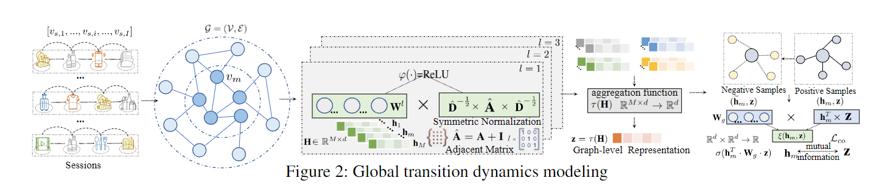
2. 本文思想概述
会话图可以看作一个单头transformer学得每个节点的会话内的嵌入，最后所有节点的嵌入进行位置编码以及attention操作得到最终的会话嵌入。自监督学习方面就是引用的 Deep Graph Infomax（DGI）
3. 会话嵌入学习
3.1 初步物品嵌入（transformer + FNN）
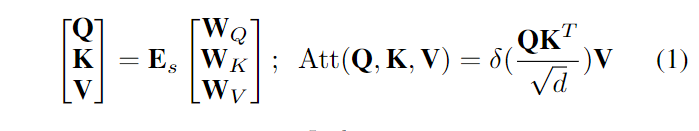

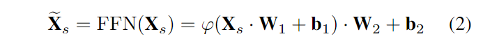
3.2 基于Attention的会话嵌入（与会话最后一个物品做attention）
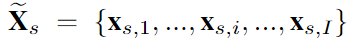
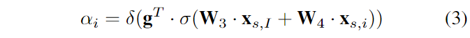
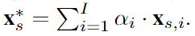
3.3 位置编码的会话嵌入
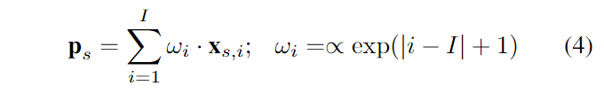
3.4 最终会话嵌入
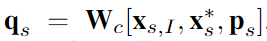
就是将最后一个物品以及前两种会话嵌入综合起来。
4. 自监督学习
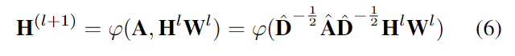
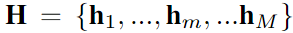
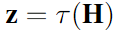
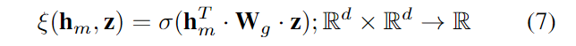
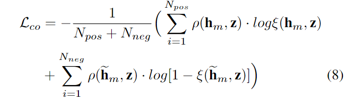
全局图构造：利用会话内的物品转移关系来构造（有向）
就是用GNN来学得全局图中所有物品的嵌入，最后用
5. 预测（Loss)
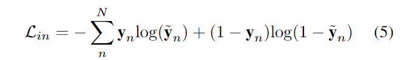
有意思的是这里论文写的是用
6. 实验结果
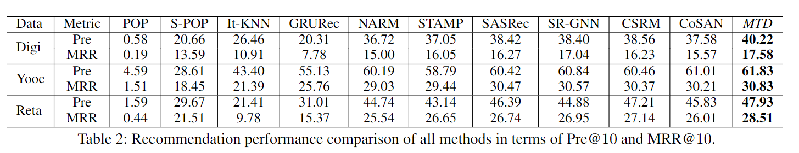